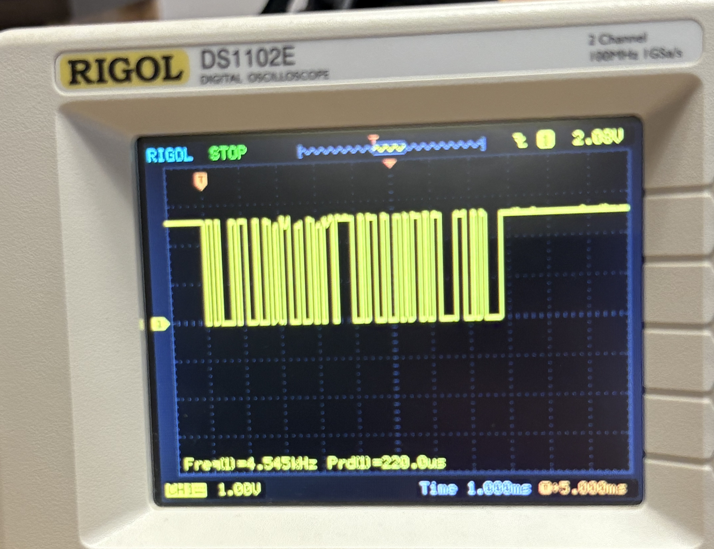
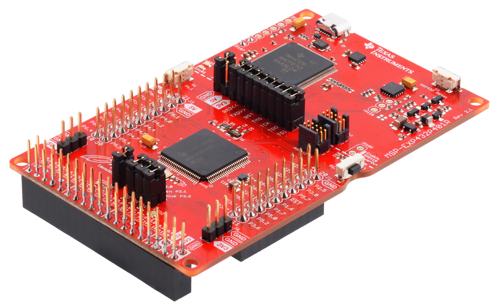
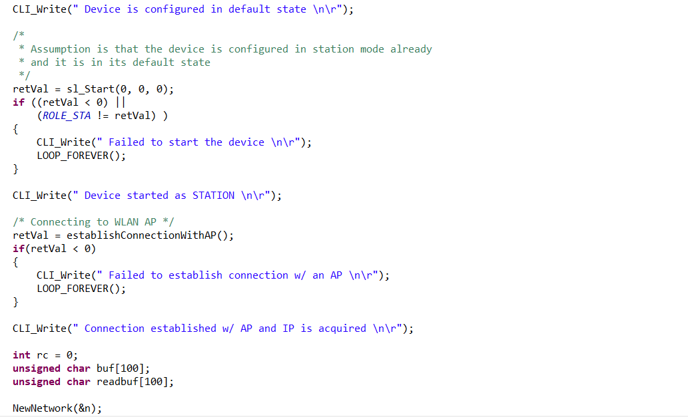
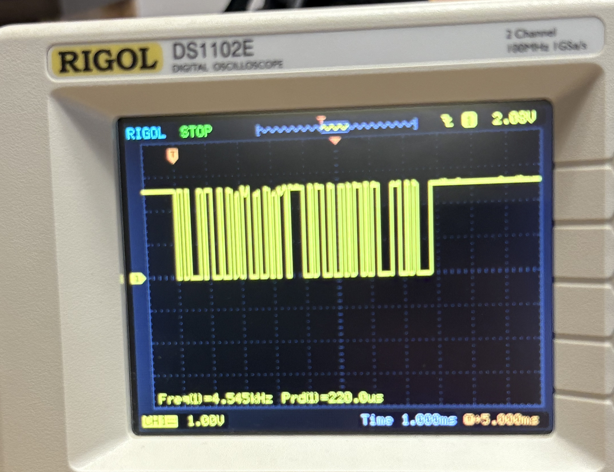
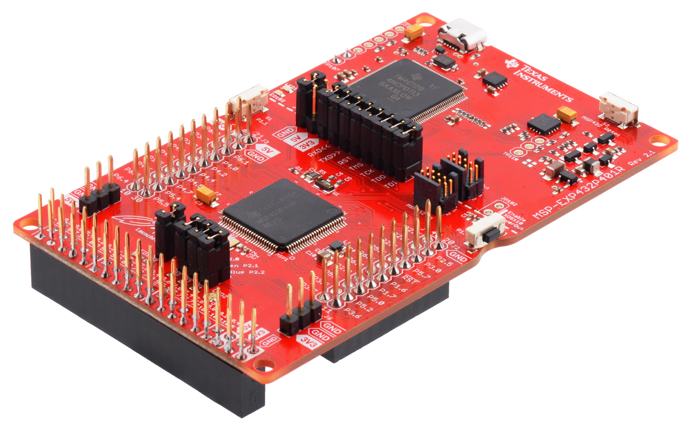
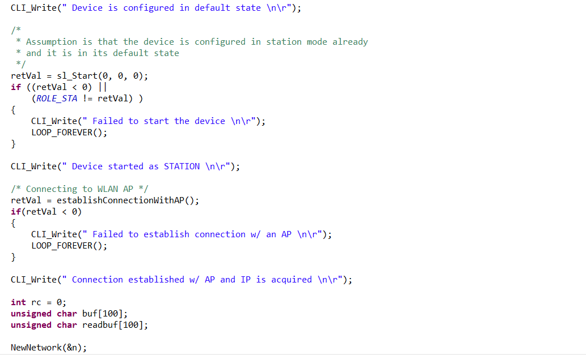

In the advanced Electrical and Computer Engineering elective ECE 1188: Cyber Physical Systems, students follow the journey data takes from a sensor, to a microcontroller, through a network and then to the cloud (and back!). Along the way students are exposed to a broad range of electrical and computer engineering topics including electronic design, embedded programming, digital signal processing, networking and information theory, wireless communications, antenna theory and big data analytics.
Course Projects
Testing code for Design Project 1, in which the robot was required to successfully complete a line-following exercise. It navigated the track via a reflectance sensor connected to the bottom of the chassis and a custom control algorithm.
This was a team project. To avoid overreliance on SysTick, I was responsible for refactoring a previous motor driver libary to use a hardware timer module instead of SysTick. I also assisted with code integration and testing.
Demonstrating Wi-Fi functionality. The demonstration program allows the robot's motors to be started and stopped via a command sent via Wi-Fi from a mobile phone.
The demonstration program was refactored from an example project using MQTT to enable message transmission. Commands were sent via a public MQTT broker.
Testing code for Design Project 2, in which the robot was required to successfully navigate an obstacle course. It navigated the obstacle course via a distance sensor attached to the front of the chassis, bump sensors that triggered when an obstacle was hit, and a custom control algorithm.
This was a team project. I was responsible for refactoring example Wi-Fi and distance sensor code into functions that could be easily integrated into a main file. I also assisted with integration and hardware troubleshooting.
 




